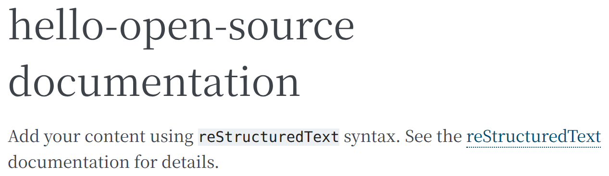
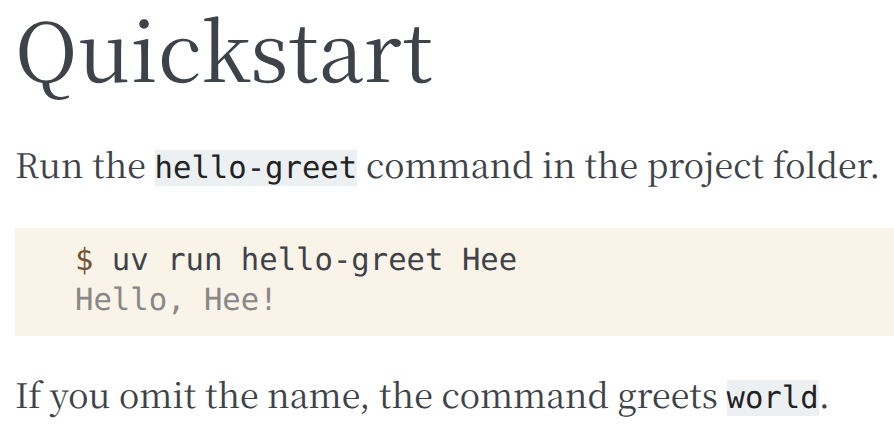
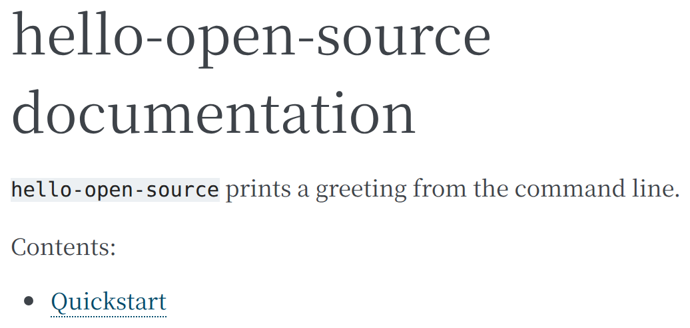
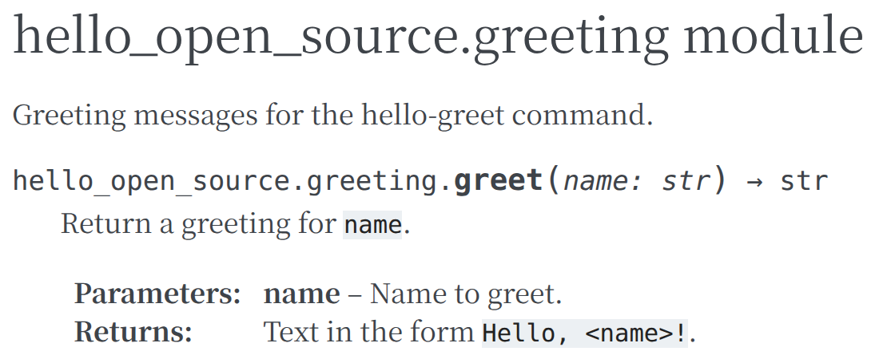
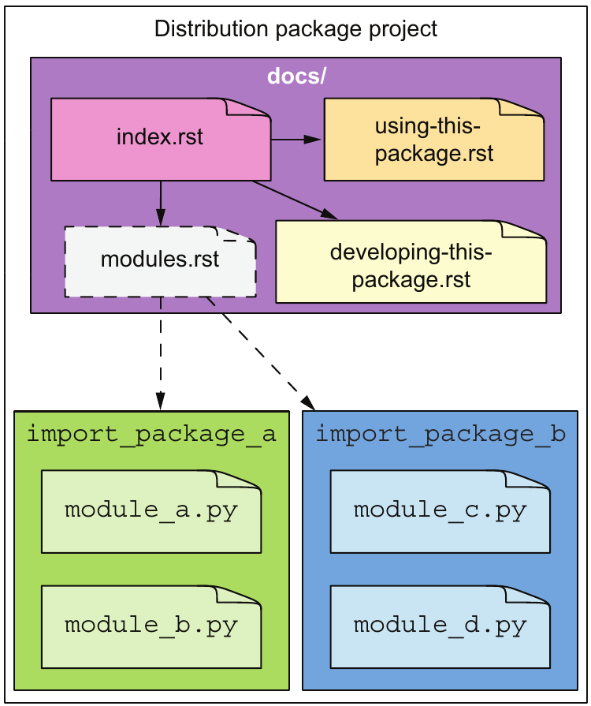
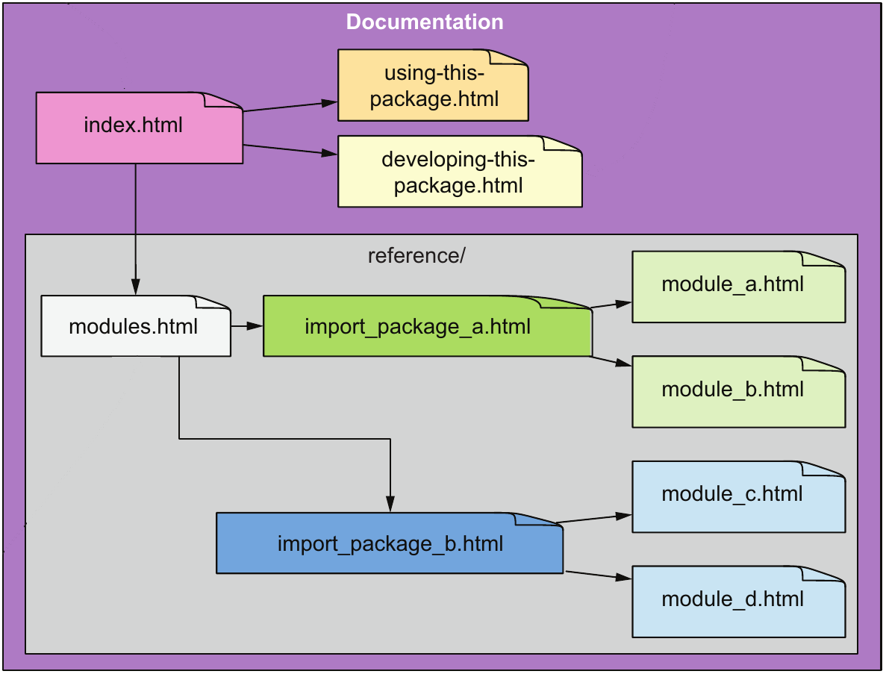
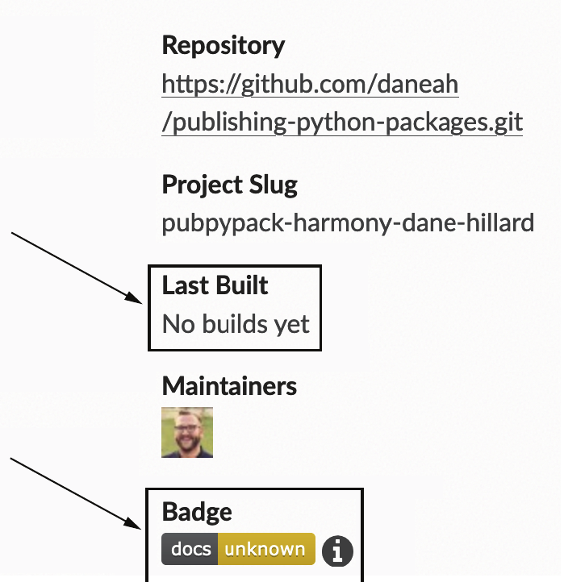
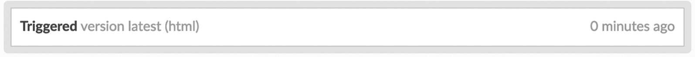
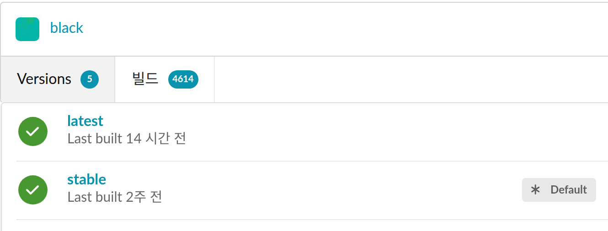
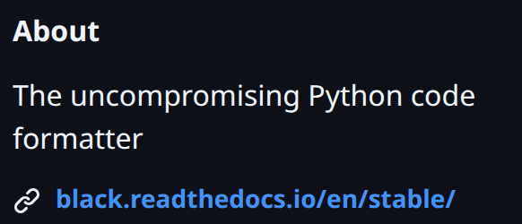

생성된 docs/의 구성
conf.py: 빌드 설정을 담은 Python 파일
index.rst: 첫 페이지의 원본
_build/: 빌드 결과를 둘 빈 폴더
--dev: Sphinx를 개발용 의존성(pyproject.toml의 dev 그룹)으로 기록.
선행 지식: hello-open-source 패키지, uv 실행, PR과 status check → 신규 학습: 코드와 함께 갱신되는 문서 사이트의 작성·빌드·공개
| 학습 순서 | 기존 지식으로 남는 문제 | 새로 배울 역할 |
|---|---|---|
| ① 독자 구분 | README 한 페이지에 첫 실행법·함수 규칙·개발 방법이 섞임 | 문서 유형: 독자의 목적별 페이지 · 사용자 문서와 개발자 문서 |
| ② 문서 빌드 | 여러 페이지를 연결·검색하는 사이트의 제작 방법 필요 | Sphinx: 문서 빌드 도구 · reStructuredText: 원본 문법 · toctree: 페이지 연결 |
| ③ API 문서 자동화 | 함수 설명을 문서에 복사하면 코드 변경 때 문서와 어긋남 | docstring: 코드 안의 설명 · apidoc·autodoc 확장: 자동 수집 · 경고 검사 옵션 |
| ④ 공개와 검토 | 내 컴퓨터에서 만든 HTML을 다른 사람에게 보여 줄 방법 필요 | Read the Docs: 빌드·공개 서비스 · .readthedocs.yaml: 빌드 설정 · 등록과 빌드 상태 |
강의 예제의 결과: hello-open-source의 공개 문서 사이트
독자: hello-greet 명령을 처음 쓰는 사용자와 코드를 고치는 개발자
입력: docs/의 .rst 파일과 코드의 docstring · 출력: Read the Docs 주소에서 열리는 HTML 페이지
API: 다른 코드나 사용자가 호출하도록 공개한 함수·명령과 각 함수·명령의 사용 규칙
필요성: README 한 페이지에 첫 실행법·함수 규칙·개발 방법이 섞이면 독자마다 필요한 부분을 찾기 어려움 → 독자가 문서를 여는 목적(Diátaxis 문서 분류 체계의 네 문서 유형)과 독자가 누구인가(사용자·개발자 문서)로 페이지를 나눔.
Hello, Hee!가 출력되는 첫 실행 과정world인가?greet의 인수와 반환값은?greet(name: str) -> str의 정확한 규칙| 구분 | 사용자 문서 | 개발자 문서 |
|---|---|---|
| 독자 | hello-greet를 실행하거나 greet를 import하는 사람 | 코드를 고치고 PR을 보내는 사람 |
| 페이지 | Quickstart(튜토리얼), API 참조(참조) | Development(How-to 가이드) |
| 담는 내용 예 | hello-greet Hee 실행법, greet(name)의 인수·반환값 | greet 코드가 있는 파일 greeting.py, 변경 확인 명령 uv run pytest -q |
판정 기준: 한 페이지가 네 질문 중 하나에만 답함. 반례: 첫 실행 과정 사이에 반환 타입 표를 끼워 넣으면 처음 배우는 독자는 따라 할 단계를 놓치고, 규칙만 찾는 독자는 긴 설명을 지나야 함.
필요성: 문서가 여러 페이지가 되면 페이지 사이 링크·검색·공통 화면 틀을 HTML로 손수 맞추기 어려움 → Sphinx: 문서 원본 파일(.rst)을 읽어 여러 페이지의 HTML 사이트를 만드는 문서 빌드 도구. 웹 공개는 뒤에서 다룰 Read the Docs의 역할.
hello-open-source/ 루트에서 실행
uv add --dev sphinx==9.0.4
uv run sphinx-quickstart docs| sphinx-quickstart 질문 | 입력 |
|---|---|
| Separate source and build directories | n: 결과를 docs/_build/에 둠 |
| Project name | hello-open-source: 배포 이름과 같은 값 |
docs/의 구성conf.py: 빌드 설정을 담은 Python 파일
index.rst: 첫 페이지의 원본
_build/: 빌드 결과를 둘 빈 폴더
--dev: Sphinx를 개발용 의존성(pyproject.toml의 dev 그룹)으로 기록.
필요성: .rst 원본은 브라우저에서 제목·링크·코드 상자를 갖춘 문서 화면으로 보이지 않음 → 빌드: 원본 폴더의 conf.py와 .rst를 읽어 결과 폴더에 HTML을 쓰는 과정. -b html: HTML 변환기(builder) 선택, 뒤의 두 경로: 원본 폴더 docs와 결과 폴더 docs/_build.
hello-open-source/ 루트에서 실행 · 출력은 주요 줄만 표시
uv run sphinx-build -b html docs docs/_buildRunning Sphinx v9.0.4
reading sources... [100%] index
writing output... [100%] index
generating indices... genindex done
writing additional pages... search done
dumping search index in English (code: en)... done
dumping object inventory... done
build succeeded.
docs/_build/index.html의 본문docs/_build/의 주요 파일 | 역할 |
|---|---|
index.html | index.rst를 변환한 첫 페이지 |
search.html · searchindex.js | 검색 화면과 검색용 단어 목록 |
필요성: 첫 페이지 하나로는 튜토리얼을 따로 담을 수 없어 새 페이지 원본이 필요하고, Sphinx는 원본을 reStructuredText 문법으로 읽음 → reStructuredText: README.md의 Markdown(# 제목, 백틱 코드)과 같은 역할을 다른 기호로 표시하는 원본 문법. 예제: 튜토리얼 페이지 quickstart.rst 작성.
docs/quickstart.rst · 전체
Quickstart
==========
Run the ``hello-greet`` command in the project folder.
.. code-block:: console
$ uv run hello-greet Hee
Hello, Hee!
If you omit the name, the command greets ``world``.
docs/_build/quickstart.html의 본문| reStructuredText | 결과 | Markdown |
|---|---|---|
글자 아래 = 밑줄 | 페이지 제목. 밑줄은 제목 길이 이상 | # Quickstart |
이중 백틱 ``world`` | 고정폭 코드 글자 | 백틱 한 쌍 |
.. code-block:: console | 지시문(directive): .. + 이름 + ::. 빈 줄 뒤 3칸 들여쓴 줄이 코드 상자의 내용. console: 터미널 입력·출력 강조 방식 | 백틱 세 개로 감싼 블록 |
| 빈 줄 | 문단 구분 | 빈 줄 |
필요성: 새 페이지를 만들어도 index.rst의 목차에 넣지 않으면 첫 페이지에서 그 페이지로 가는 링크가 없음 → toctree: 목차(table of contents)를 만드는 지시문. 나열한 페이지만 첫 페이지의 목차 링크로 이어짐.
docs/index.rst · 전체 (생성된 안내 문장을 소개로 교체)
hello-open-source documentation
===============================
``hello-open-source`` prints a greeting
from the command line.
.. toctree::
:maxdepth: 2
:caption: Contents:
quickstart빈 줄 뒤 항목 quickstart: 연결할 페이지 quickstart.rst(.rst 생략). :maxdepth:·:caption:: 목록 깊이와 목록 위 제목.
| 같은 빌드 명령 | 마지막 줄 quickstart 없음 | 있음 |
|---|---|---|
| 빌드 출력 | WARNING: document isn't included in any toctree | 경고 없음 |
| 종료 코드 | 0 | 0 |
quickstart.html | 만들어짐 | 만들어짐 |
index.html의 링크 | 0개: 독자가 찾을 수 없음 | Contents 아래 Quickstart |

index.html 본문toctree가 없을 때의 문제: quickstart.html은 만들어지지만 어느 페이지에서도 링크가 없는 고립된 페이지가 됨. 빌드는 성공(종료 코드 0)하고 경고만 출력되므로, 출력의 WARNING을 읽어야 발견 가능.
__doc__필요성: 문서 도구가 함수 설명을 코드에서 직접 읽으려면 설명이 주석이 아니라 코드 객체에 저장되어 있어야 함 → docstring: 모듈 파일·함수 본문의 첫 문장 자리에 둔 문자열. Python이 docstring을 그 모듈·함수 객체의 __doc__ 속성에 저장.
src/hello_open_source/greeting.py · 전체
"""Greeting messages for the hello-greet command."""
def greet(name: str) -> str:
"""Return a greeting for ``name``.
:param name: Name to greet.
:returns: Text in the form ``Hello, <name>!``.
"""
return f"Hello, {name}!"첫 줄: 모듈 docstring · 함수 안 세 따옴표 문자열: 함수 docstring. :param name:·:returns:: 인수와 반환값을 적는 reStructuredText 필드 목록.
루트에서 실행 · repr: 줄바꿈을 \n으로 보여 주는 출력
uv run python -c "from hello_open_source import greeting; print(repr(greeting.__doc__)); print(repr(greeting.greet.__doc__))"'Greeting messages for the hello-greet command.' 'Return a greeting for ``name``.\n\n:param name: Name to greet.\n:returns: Text in the form ``Hello, <name>!``.\n'
# 주석과 비교 · 아래 4줄을 파일로 저장해 uv run python으로 실행 · 출력 None: 주석은 __doc__에 저장되지 않음
def hello():
# Say hello.
return "hi"
print(hello.__doc__)None
필요성: Sphinx는 .rst만 읽고 코드의 docstring은 읽지 않음 → 확장 없이는 함수 설명을 .rst에 복사(코드를 고치면 문서가 낡음)하거나, 모듈마다 docstring을 불러오는 .rst를 손으로 쓰고 새 모듈마다 추가해야 함. apidoc 확장(확장: Sphinx에 기능을 더하는 Python 모듈): 빌드할 때마다 패키지의 모듈 목록을 읽어 이 .rst와 참조 입구 modules.rst를 자동 생성.
docs/conf.py · extensions = [] 줄을 아래로 교체
extensions = ['sphinx.ext.apidoc']
apidoc_modules = [
{
'path': '../src/hello_open_source',
'destination': 'reference',
},
]extensions | 켤 확장의 모듈 이름 목록 |
apidoc_modules | 문서화할 패키지 목록. 딕셔너리({키: 값}) 하나가 패키지 하나 |
'path' | conf.py가 있는 docs/ 기준 패키지 위치 |
'destination' | docs/ 기준 생성 위치 → docs/reference/ |
생성된 docs/reference/hello_open_source.rst 일부 · \_는 밑줄 그대로
hello\_open\_source.greeting module
-----------------------------------
.. automodule:: hello_open_source.greeting
:members:
:undoc-members:automodule | 모듈을 import해 docstring과 시그니처(함수 이름·인수·반환 타입)를 가져옴 |
:members: | 밑줄로 시작하지 않는 이름을 실음 |
:undoc-members: | docstring이 없는 이름도 실음 |
문제: apidoc 확장을 켠 뒤 첫 경고 검사 빌드 실패. 원인: 생성된 참조 입구 reference/modules가 어느 toctree에도 없음. 해결: reference/modules를 index.rst의 toctree에 연결하면서, 2장의 개발자 문서(How-to 가이드)도 development.rst로 만들어 함께 연결.
uv run sphinx-build -E -n -W -b html docs docs/_build · 주요 줄, 경로는 루트 기준
Running apidoc docs/reference/modules.rst: WARNING: document isn't included in any toctree build finished with problems, 1 warning (with warnings treated as errors).
종료 코드 1. 옵션 -W: 경고를 빌드 실패로 바꿈(CI가 실패로 판정) · -E: 바뀌지 않은 파일까지 모든 원본을 다시 읽어 경고 재출력 · -n: 링크 대상이 없는 참조도 경고
docs/index.rst · toctree 항목 (두 줄 추가)
quickstart
development
reference/modules같은 명령 다시 실행 · 종료 코드 0
Running apidoc
reading sources... [100%] reference/modules
build succeeded.docs/development.rst · 전체 · 2장 개발자 문서: 코드 위치와 검사 명령 · - 밑줄: = 아래 단계 제목, 줄 앞 - : 목록
Development
===========
Project layout
--------------
Code lives in ``src/hello_open_source/``.
- ``greeting.py``: the ``greet`` function
- ``cli.py``: the ``hello-greet`` command
Documentation sources live in ``docs/``.
Checks
------
.. code-block:: console
$ uv run pytest -q
$ uv run sphinx-build -E -n -W -b html docs docs/_build필요성: apidoc이 만든 .rst에는 automodule 지시문만 있어 함수 설명 화면은 아직 없음 → autodoc 확장: automodule이 가리키는 모듈을 import해 함수 시그니처와 docstring을 HTML로 변환. 아래 화면: docs/_build/reference/hello_open_source.html의 greeting 모듈 부분.
greeting.py의 코드 | 화면의 위치 |
|---|---|
| 모듈 docstring | 모듈 제목 아래 첫 문장 |
def greet(name: str) -> str | 시그니처 greet(name: str) → str. 타입 힌트를 그대로 표시 |
| 함수 docstring 첫 문단 | 시그니처 아래 설명 |
:param name: · :returns: | Parameters · Returns 표 |

코드의 docstring을 고치면 다음 빌드(-E)에서 API 참조 페이지도 따라 바뀜. 설명을 .rst에 복사해 두면 함수를 고칠 때 docstring과 .rst 두 곳을 함께 고쳐야 함.
필요성: 손으로 쓰는 원본과 빌드마다 생성되는 파일을 구분해야 Git에 커밋할 파일을 정할 수 있음. 교재 Figure 8.2 읽는 순서: 왼쪽 원본 → Sphinx → 오른쪽 결과. 실선 화살표: toctree 연결 · 점선 상자·점선 화살표: 빌드 때 코드에서 생성되는 관계 · 같은 색: 같은 문서.


예제 대응: using-this-package.rst → quickstart.rst, developing-this-package.rst → development.rst, import_package_a → hello_open_source(두 모듈을 한 페이지에)
Git 기록 판정: docs/reference/·docs/_build/는 빌드마다 재생성 → 커밋하면 리뷰할 변경만 늘어남. 두 경로를 .gitignore에 추가해 커밋한 뒤 git ls-files docs 결과: conf.py와 .rst 3개뿐.
.readthedocs.yaml필요성: 로컬에서 빌드한 HTML은 내 컴퓨터에만 있어 독자가 볼 수 없음 → Read the Docs: GitHub 저장소에 커밋된 파일로 Sphinx 빌드를 실행하고 결과 HTML을 공개 주소에 올리는 서비스. 기본 브랜치에 push할 때마다 다시 빌드·공개.
hello-open-source/.readthedocs.yaml · 전체
version: 2
build:
os: ubuntu-24.04
tools:
python: "3.12"
sphinx:
configuration: docs/conf.py
fail_on_warning: true
python:
install:
- method: uv
command: sync빌드 환경과 명령: 저장소 루트의 .readthedocs.yaml이 결정. .readthedocs.yaml이 없으면 빌드 실패.
| 키 | 뜻과 예제 값의 선택 이유 |
|---|---|
version: 2 | 설정 파일 형식의 판본. 필수 |
build.os | 빌드 컴퓨터의 운영체제. 필수 |
build.tools.python | Python 버전. CI 품질 검사와 같은 3.12 |
sphinx.configuration | 저장소 루트 기준 conf.py 위치 |
sphinx.fail_on_warning | true면 빌드 명령에 -W를 붙여 경고 시 실패 |
python.install | method: uv·command: sync: 빌드 전에 uv sync로 uv.lock대로 프로젝트와 dev 그룹(Sphinx 포함)을 설치 |
설치 단계가 필요한 이유: autodoc 확장이 패키지를 import함. Sphinx만 설치하면 패키지를 찾지 못해 빌드 중단.
필요성: Read the Docs는 어느 저장소의 어느 브랜치를 빌드해 어떤 주소에 공개할지 알아야 함 → 프로젝트: GitHub 저장소 하나를 Read the Docs에 연결한 문서 빌드·공개 단위. 프로젝트마다 이름(Name), 저장소 주소, 기본 브랜치, 빌드 기록, 공개 주소를 가짐.
.readthedocs.yaml을 커밋·push한 뒤)① readthedocs.org에 GitHub 계정으로 로그인: Read the Docs가 내 저장소 목록을 읽도록 허용
② 대시보드 → Add project → 저장소 이름 검색·선택 → Continue
③ 저장소 정보로 미리 채워진 Name·Default branch 확인 → Next
④ 설정 파일 안내 화면에서 This file exists: 저장소 루트에 .readthedocs.yaml이 이미 있다는 확인
⑤ 등록 직후 Default branch의 첫 빌드 자동 시작
| 등록 항목 | 뜻과 예제 값 |
|---|---|
| Name | 공개 주소의 앞부분. 예: hello-open-source → https://hello-open-source.readthedocs.io/en/latest/. 다른 사람이 쓰는 이름은 사용 불가 |
| Repository | 빌드할 GitHub 저장소. 예: https://github.com/<본인ID>/hello-open-source |
| Default branch | 주소의 latest가 가리킬 브랜치(보통 main). 이 브랜치에 push할 때마다 다시 빌드 |
등록 뒤 결과: 성공한 빌드만 공개 주소에 반영. 빌드 결과와 기록은 다음 장의 프로젝트 페이지에서 확인.
필요성: 문서가 실제로 빌드·공개되었는지 확인할 곳이 필요함 → 프로젝트 페이지: Read the Docs 사이트 안의 프로젝트별 상태 화면(app.readthedocs.org/projects/<Name>/). 버전별 마지막 빌드 결과와 빌드 목록 제공.

No builds yet, 배지 unknown
Triggered → 성공 또는 실패실제 예: Python 코드 포맷터 Black(GitHub 저장소 psf/black)

latest·stable 마지막 빌드 성공(초록 체크), 빌드 탭에 빌드 기록 4,614건
latest: Default branch의 최신 커밋 문서 · stable: 가장 높은 정식 버전 태그의 문서
문서화 흐름: 독자별 페이지를 원본으로 작성 → API 설명은 코드에서 수집 → 커밋된 파일로 빌드해 공개.
| 개념 | 역할 | 핵심 판정 |
|---|---|---|
| 문서 유형 · 사용자·개발자 문서 | 독자의 목적과 대상에 맞춰 페이지와 코드 범위를 나눔 | 한 페이지가 한 질문에 답하고, 사용자 문서는 실행법·함수 규칙만 싣는가? |
| Sphinx · reStructuredText | .rst 원본과 conf.py로 HTML 사이트 빌드 | sphinx-build가 결과 폴더에 페이지를 만드는가? |
| toctree | index.rst에서 모든 페이지로 가는 연결 | isn't included in any toctree 경고가 없는가? |
-E · -n · -W | 전체 다시 읽기 · 대상 없는 참조 경고 · 경고를 실패로 | 경고가 종료 코드 1로 이어지는가? |
| docstring · apidoc · autodoc | 코드의 설명을 빌드마다 API 참조 페이지로 생성 | 시그니처·Parameters가 코드와 같은가? |
Read the Docs · .readthedocs.yaml | 커밋된 파일로 설치·빌드·공개 | Builds 목록의 빌드가 성공하는가? |